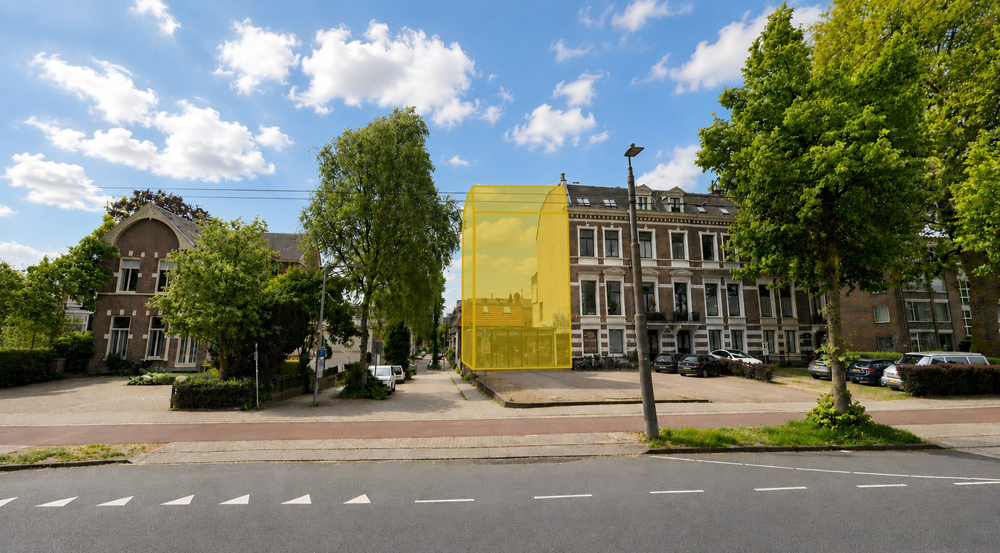
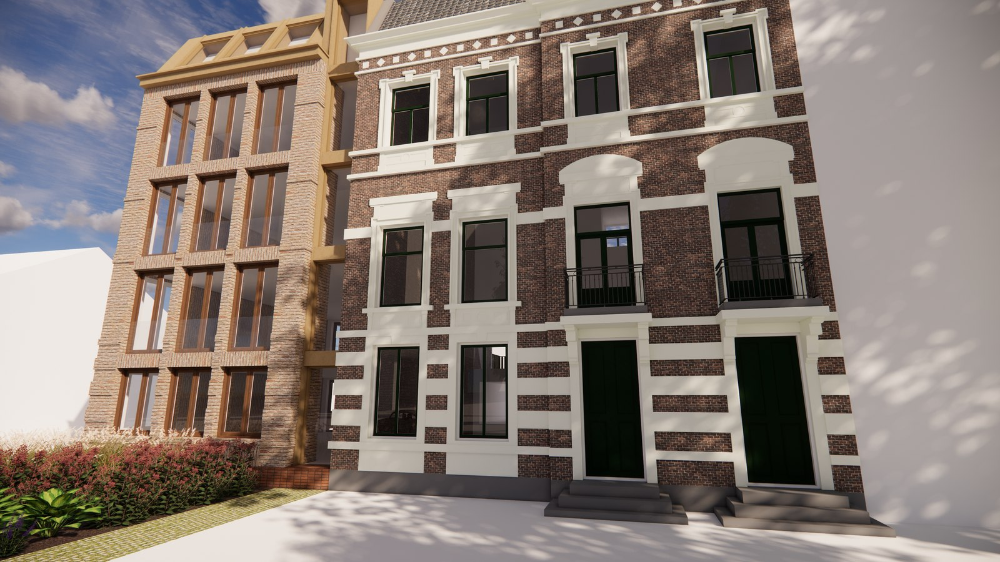
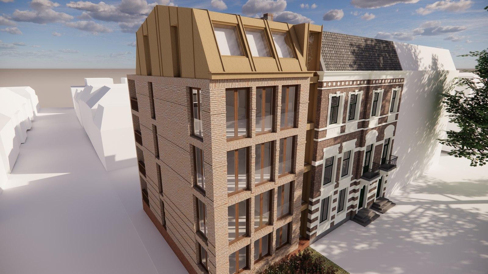
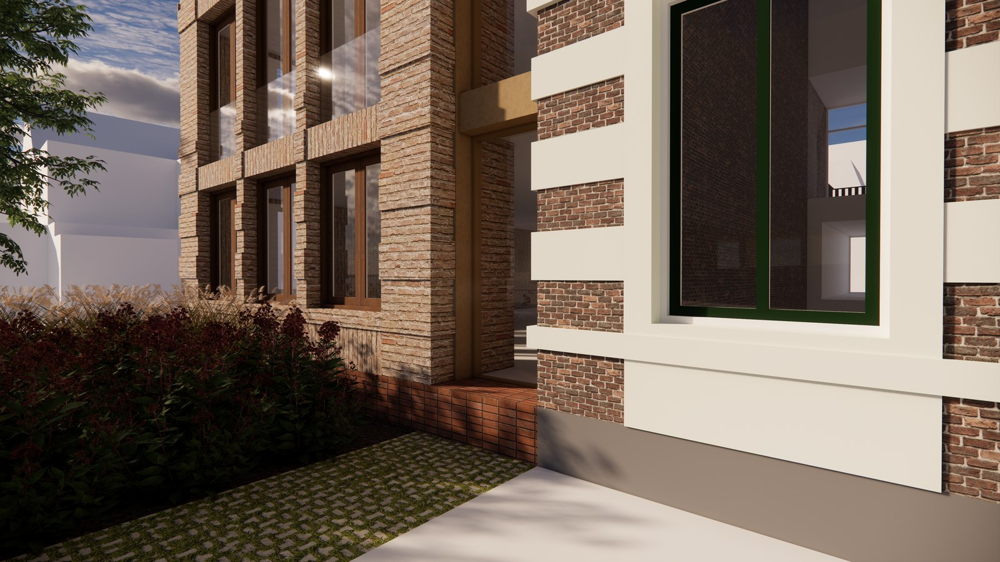
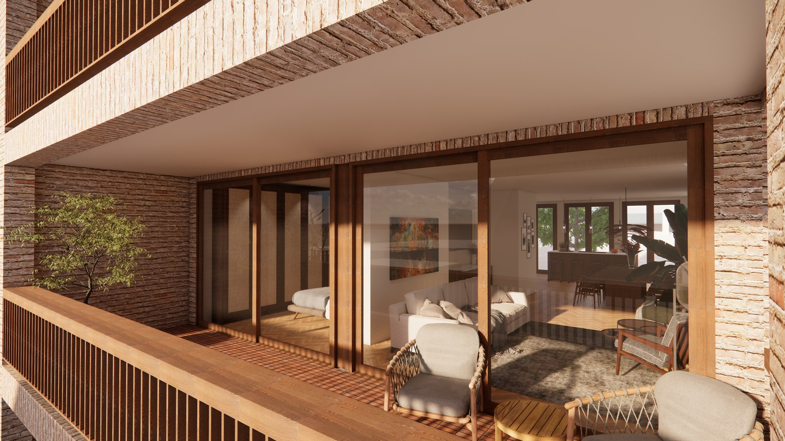

← Terug naar projecten
Nieuwbouw — in ontwikkeling
Velperweg 56b, Arnhem
Nieuwbouw van een woongebouw aan de Velperweg in Arnhem, in opdracht van 026Vastgoed, direct naast een monumentaal woonblok. Op de plek van een bestaand pand van één bouwlaag verrijst een nieuw volume dat er nooit eerder heeft gestaan, met vijf nieuwe bouwlagen. Iedere laag herbergt een appartement van circa 80 m². Juist omdat het hier om nieuwbouw gaat, is bewust gekozen voor een ingetogen en hedendaags ontwerp dat recht doet aan het monumentale buurpand.





Uw project
Benieuwd wat PM|AD voor u kan betekenen?
Elk project begint met een goed gesprek.